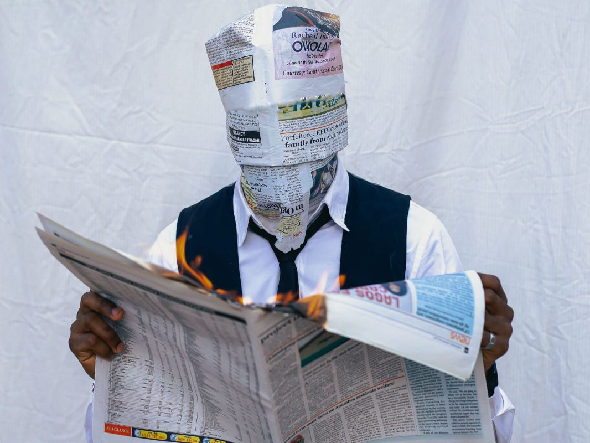

a Seguir teremos como a Desinformação afeta diretamente sua vida e a vida de milhões de brasileiros
INTRODUÇÃO AO PROBLEMA
As Fake News são informações falsas ou distorcidas divulgadas como se fossem verdadeiras. Com o crescimento da internet e das redes sociais, a velocidade de compartilhamento dessas informações aumentou drasticamente, permitindo que boatos, teorias conspiratórias e conteúdos manipulados alcancem milhões de pessoas em poucos minutos.
Embora a desinformação exista há séculos, a popularização das plataformas digitais transformou o problema em um desafio global. Durante eventos históricos recentes, como eleições, pandemias e conflitos internacionais, notícias falsas influenciaram decisões individuais e coletivas, afetando a confiança nas instituições, na ciência e nos meios de comunicação.
Atualmente, o Brasil está entre os países que mais enfrentam os impactos da desinformação. As Fake News afetam a saúde pública, a política, a economia e até mesmo a vida pessoal dos cidadãos. Combater esse fenômeno tornou-se uma responsabilidade compartilhada entre governos, empresas, escolas e usuários da internet.
Figura 1 - Pessoas protestam contra o Avanço das FakeNews
QUEM CAUSA TUDO ISSO ?
Muitas pessoas compartilham conteúdos sem conferir a fonte ou verificar se a informação é verdadeira. O desejo de ser o primeiro a divulgar uma notícia frequentemente supera a preocupação com sua veracidade.
Algoritmos das redes sociais
As plataformas digitais tendem a promover conteúdos que geram mais engajamento. Notícias sensacionalistas, chocantes ou polêmicas costumam receber mais curtidas e compartilhamentos, aumentando sua visibilidade.
Manipulação intencional
Algumas Fake News são produzidas deliberadamente para influenciar opiniões, atacar adversários políticos, obter ganhos financeiros por meio de anúncios ou gerar confusão entre a população.
Falta de educação midiática
Muitas pessoas não recebem formação adequada para analisar criticamente informações encontradas na internet, tornando-se mais vulneráveis à manipulação e à desinformação.
Figura 2 - homem verifica fontes de notícias de um site
CONSEQUÊNCIAS E IMPACTO
Boatos sobre vacinas, medicamentos e doenças podem colocar vidas em risco e prejudicar campanhas de saúde e isso ocorreu com força durante a pandemia de COVID-19, onde mais de 700 mil pessoas faleceram em meio as tragédias e as péssimas gestões ambientais e sociais por parte do governo anterior.
POLARIZAÇÃO POLÍTICA
Informações falsas podem influenciar processos eleitorais e reduzir a confiança nas instituições. como por exemplo no brasil surgiu um contexto de polarização que entrou com muita força aparti de 2018, no qual intensificou a disputa entre partidos politicos, que no auge das eleições presidenciais do Brasil em 2022 com a vitória de Lula, a oposição surgiu com uma tentativa de golpe de estado que não foi para frente esse movimento foi o auge das disputas entre direita e esquerda que durante esse tempo surgiram muitas fakenews que culminaram neste evento.
Fake News aumentam a polarização e incentivam conflitos entre grupos da sociedade.
Empresas, marcas e profissionais podem sofrer prejuízos devido à circulação de informações falsas.
Pessoas podem ser vítimas de boatos, ataques virtuais e julgamentos públicos injustos.
Figura 3 - professor alertando a sala sobre o perigo das fakenews
O QUE PODE SER FEITO ?
buscamos orientações de profissionais em relação a Segurança e a transparência da informação como jornalistas para nos ajudar em ações que podem combater a disseminação de informações falsas:
Ações Individuais
Verificar a fonte antes de compartilhar.
Ler a notícia completa e não apenas o título.
Consultar veículos confiáveis e agências de checagem.
Desconfiar de conteúdos extremamente emocionais ou alarmistas.
Ações Coletivas
Promover campanhas de conscientização.
Estimular a educação digital nas escolas.
Incentivar o pensamento crítico e a checagem de fatos.
Políticas Públicas
Investir em alfabetização midiática.
Fortalecer mecanismos de transparência nas plataformas digitais.
Desenvolver estratégias para identificar redes coordenadas de desinformação.
Figura 4 - mulher no qual em seu reflexo se mostra números binários
DEPOIMENTO
COMO A DESINFORMAÇÃO AFETA A VIDA DAS VÍTIMAS?
Relato Fictício — Mariana, 17 anos
"Recebi uma mensagem dizendo que uma vacina causava doenças graves. Compartilhei sem verificar. Depois descobri que a informação era falsa e percebi que poderia ter contribuído para espalhar medo e desinformação."
Relato Fictício — Carlos, 42 anos
"Uma notícia falsa envolvendo minha empresa começou a circular nas redes sociais. Em poucos dias, perdemos clientes e tivemos que gastar tempo e recursos para desmentir as acusações."
Relato Fictício — Jéssica, 22 anos
"Fui alvo de rumores e acusações falsas que se espalharam rapidamente pela internet. Mesmo sem provas, milhares de pessoas passaram a me atacar. A experiência afetou minha saúde mental e minha vida pessoal. Casos semelhantes mostram como a desinformação e os julgamentos precipitados nas redes sociais podem causar consequências graves para pessoas reais."

Figura 5 - homem com um jornal no rosto segurando um jornal em chamas